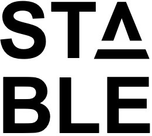

 |
Last updated on September, 2026. |
Professor
Computer Science and Engineering Department
Jacobs School of Engineering
University of California, San Diego
Email: jzhao@ucsd.edu
Office: CSE 3222
Telephone: 858-822-2449
I am a Professor in the Computer Science and Engineering Department at University of California, San Diego. I am affiliated with the Non-Volatile System Laboratory (NVSL), ML Systems Group, Center for Machine-Integrated Computing and Security (MICS) at UCSD, and Center for Processing with Intelligent Storage and Memory (PRISM). My research spans and stretches the boundary across computer architecture, system software, and machine learning, with an emphasis on memory systems, machine learning and systems codesign, and system support for smart applications.
If you are a UCSD graduate or undergraduate student interested in joining us as a research volunteer, please complete this form.
 |
Last updated on September, 2026. |